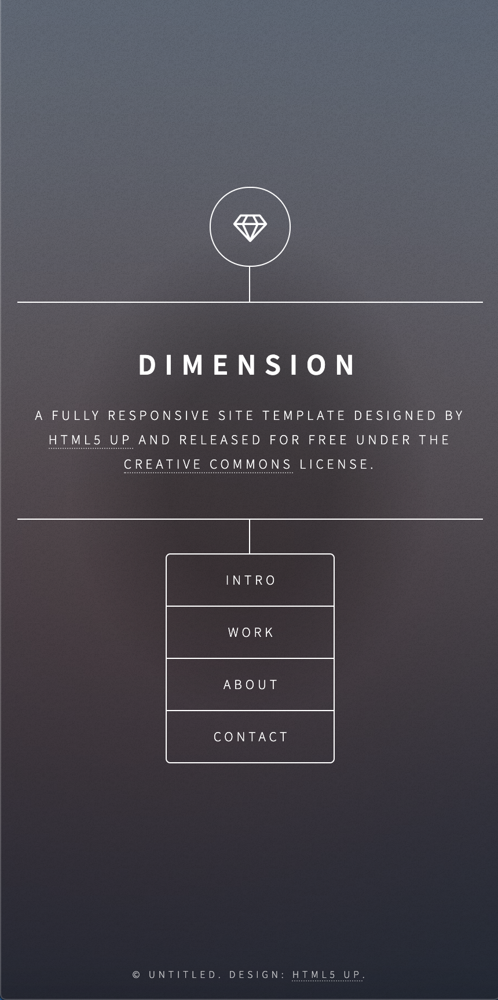
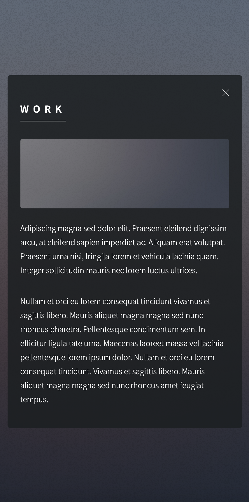
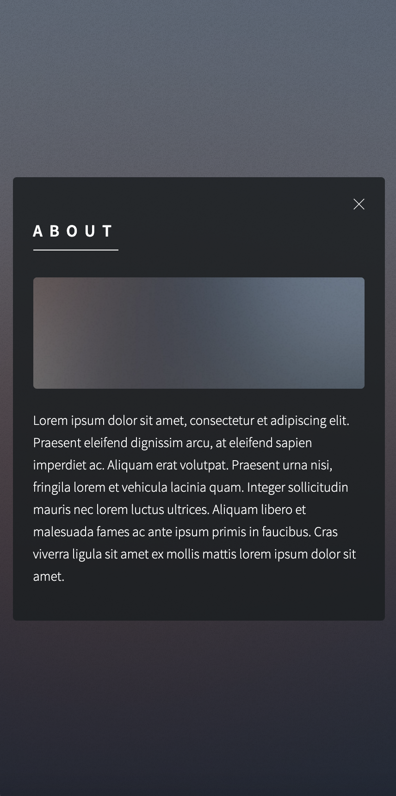
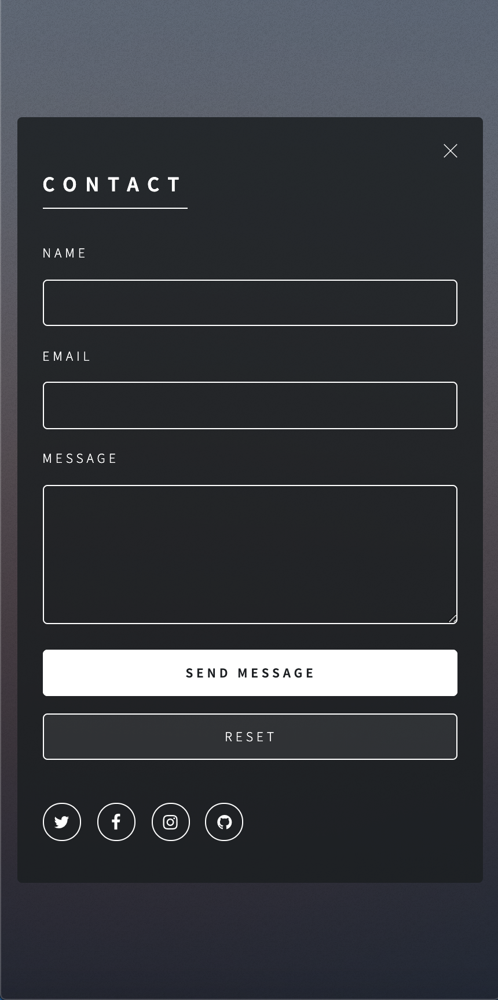

Enoncé
Responsive : les media queries
Rendre le site se trouvant dans le dossier "SITE_A_MODIFIER" responsive
Vous prendrez un seul breakpoint à 480px.




Rendre le site se trouvant dans le dossier "SITE_A_MODIFIER" responsive
Vous prendrez un seul breakpoint à 480px.